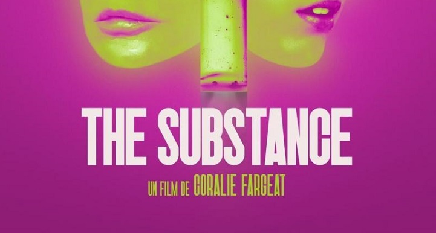
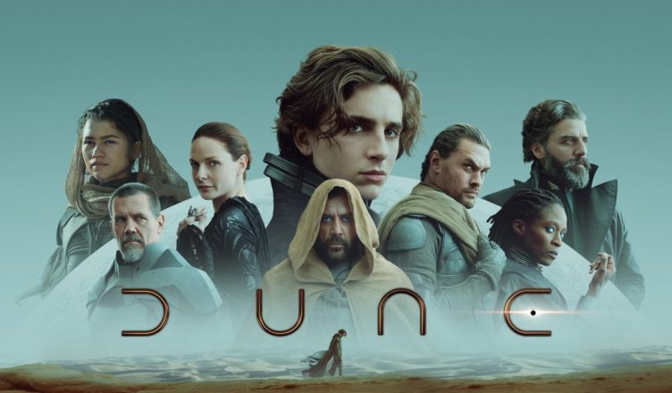
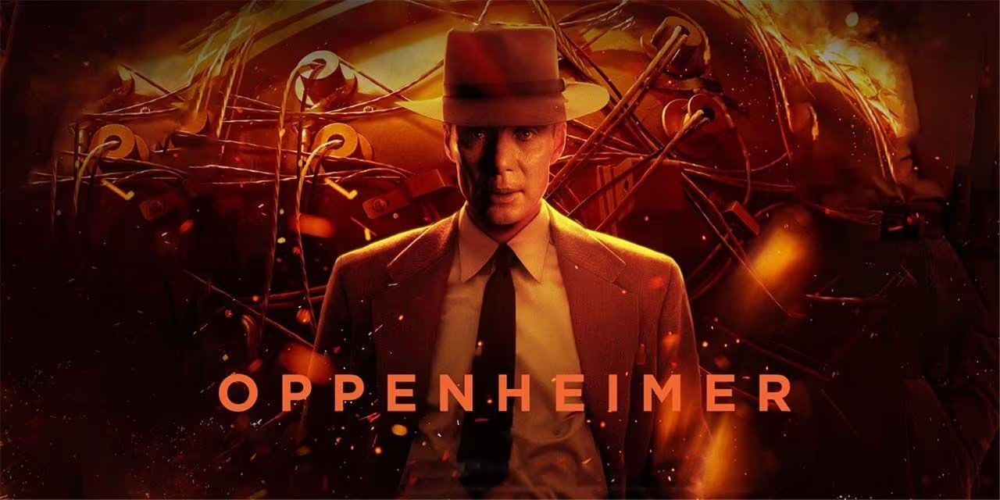
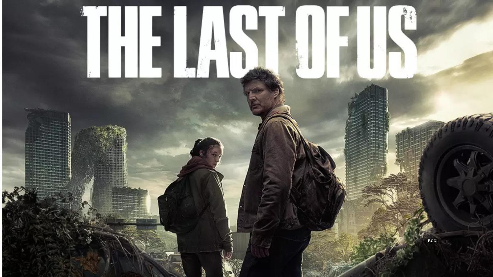
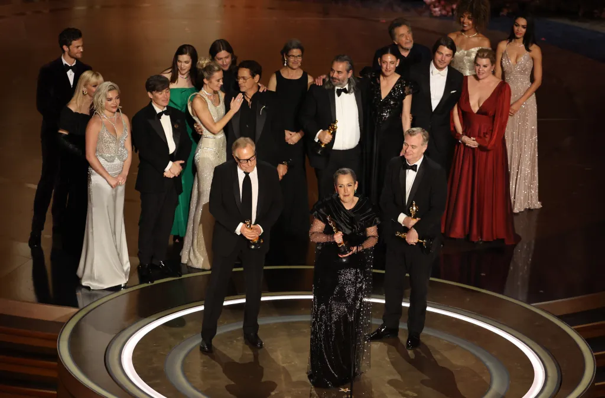

El refugio definitivo para los amantes del cine y las series
Un análisis profundo sobre cómo el cine moderno revive el romance clásico y la lucha por los sueños en la ciudad de Los Ángeles.

Una mirada a cómo la televisión transformó su narrativa a través de personajes complejos y situaciones morales ambiguas.

Leonardo Wilhelm DiCaprio (pronunciado /diˈkaːprjo/; Los Ángeles, California; 11 de noviembre de 1974)1 es un actor, productor de cine y ambientalista estadounidense. Es ganador de numerosos premios, entre los que destacan un Óscar al mejor actor y un premio BAFTA al mejor actor por su actuación en El renacido (2015); dos Globos de Oro al mejor actor de drama por sus actuaciones en El aviador (2004) y El renacido; y un Globo de Oro al mejor actor de comedia o musical por El lobo de Wall Street (2013). Adicionalmente, ha ganado el premio del Sindicato de Actores, el Oso de Plata y un Premio Chlotrudis.2 Hasta 2019, sus películas habían recaudado aproximadamente 7200 millones de dólares, y ha estado ocho veces en la lista de los actores mejor pagados del año.

Greta Celeste Gerwig (Sacramento, California; 4 de agosto de 1983) es una actriz, directora, guionista y productora estadounidense. Su renombre surgió por su participación en películas del género mumblecore.12 Ha colaborado con el director Joe Swanberg en varios proyectos, incluyendo la película Nights and Weekends escrita, dirigida y protagonizada por ambos. En 2017 debutó como directora y guionista en solitario con la película Lady Bird, por la que ganó el Globo de Oro a la mejor película - Comedia o musical y recibió nominaciones a los Premios Óscar a mejor dirección y mejor guion original.
Netflix Es un servicio de transmisión o 'streaming' que permite ver una gran variedad de series, documentales y películas en cualquier dispositivo con acceso a internet como celulares, computadoras, tabletas o 'smart tv' mediante el pago de una tarifa fija mensual.

Max es una plataforma de streaming de contenido bajo demanda de la mano de la productora WarnerMedia. La aplicación está disponible en smart TV, Android y iOS o puedes utilizar el navegador para entrar en todos los contenidos con tu cuenta de Max/HBO Max.
El uso de la realidad virtual en la industria cinematográfica está permitiendo a los espectadores vivir experiencias inmersivas como nunca antes.
La inteligencia artificial está revolucionando la edición, el guion y la personalización del contenido para audiencias globales.
En el mismo día en el que se publica la teoría de Oppenheimer (Cillian Murphy) sobre la muerte de las estrellas y las apariciones de agujeros negros, Hitler invade Polonia. La Segunda Guerra Mundial da comienzo y EE. UU. teme que Alemania tenga entre su arsenal una bomba capaz de destruir una nación entera. El ejército pone a Robert Oppenheimer al frente de una ofensiva nuclear encargada de crear la bomba definitiva, y da comienzo el Proyecto Manhattan. Oppenheimer no deja de plantearse cuáles serán las consecuencias de su invención y su verdadero poder de destrucción. Se percata de que su vida va a quedar por siempre ligada al nacimiento de la bomba atómica y vivirá temiendo su propia creación. El daño que esta causa le hace cambiar y oponerse desde entonces al uso de armas nucleares.
Esta comedia familiar de aventuras es una adaptación al cine sobre una de las muñecas de juguete más famosas del mundo. Barbie (Margot Robbie) lleva una vida ideal en Barbieland, allí todo es perfecto, con chupi fiestas llenas de música y color, y todos los días son el mejor día. Claro que Barbie se hace algunas preguntas, cuestiones bastante incómodas que no encajan con el mundo idílico en el que ella y las demás Barbies viven. Cuando Barbie se dé cuenta de que es capaz de apoyar los talones en el suelo, y tener los pies planos, decidirá calzarse unos zapatos sin tacones y viajar hasta el mundo real. Su compañero Ken (Ryan Gosling) irá con ella, juntos descubrirán cómo es el mundo de verdad. Claro que cuando el CEO de Mattel (Will Ferrell) sepa que Barbie ha escapado de Barbieland, evitará a toda costa la catástrofe y querrá devolver de nuevo a esta muñeca de juguete a una caja.

The last of us se centra la pandemia que esta arrasando a la humanidad, por un virus que dejó a todos al borde de la extinción. Este virus afecta a las personas de forma extraña, puesto que en cuanto se contagian, estos se vuelven caníbales y se puede contagiar a través de un simple mordisco. Un par de décadas después es más que evidente que la humanidad ha quedado devastada y los supervivientes, conviven en zonas de cuarentena custodiadas por oficiales, en asentamientos independientes, o forman parte de grupos ambulantes. Es en este momento cuando Joel, que se dedica al contrabando, se ve envuelto en una misión cuyo objetivo final de llevar a una chica llamada Ellie a las afueras de la zona de cuarentena en donde se encontrarán con las Luciénargas, un grupo paramilitar de rebeldes que rechazan la autoridad de las zonas de cuarentena, y son los encargados de recoger a Ellie. Joel acepta la propuesta y, mientras se escabullen de la zona, descubren que Ellie tiene una mordida y está infectada y aunque normalmente los efectos aparecen en los dos primeros días, su caso es diferente: pese a que su encuentro con un infectado ocurrió tres semanas atrás, no muestra indicios de infección. De esta forma, entienden que su inmunidad representa para los Luciérnagas una esperanza en la búsqueda de una cura, lo cual justifica la necesidad de protegerla.
Stranger Things (originalmente titulada Montauk) es una serie de televisión dramática de misterio que está ambientada en una localidad de Indiana. Dicho lugar adquiere fama por los extraños acontecimientos que están sucediendo, similares a los del 'Proyecto Montauk', un supuesto proyecto secreto llevado a cabo por el gobierno de los Estados Unidos en el que se realizaban experimentos con la finalidad de desarrollar técnicas de guerra psicológica. La historia narra la súbita desaparición de un niño en esta ciudad durante la década de los 80, hecho que destapa los extraños sucesos que tienen lugar en la zona, producto de una serie de experimentos que realiza el gobierno. Además, en la ciudad aparecen fuerzas sobrenaturales inquietantes y una niña muy perturbadora.

Los ganadores de los Premios Oscar 2024 fueron: Mejor película: Oppenheimer Mejor dirección: Christopher Nolan Mejor actor: Cillian Murphy Mejor actriz: Emma Stone Mejor actor de reparto: Robert Downey Jr. Mejor canción original: "What was I made for?" de Billie Eilish y Finneas Mejor documental: 20 días en Mariúpol Mejor cortometraje de ficción: La maravillosa historia de Henry Sugar Mejor cortometraje de animación: War Is Over! Inspired by the Music of John & Yoko Mejor película internacional: La zona de interés Mejor diseño de producción, vestuario, maquillaje y peluquería: Pobres criaturas Mejor sonido: La zona de interés Mejores efectos visuales: Godzilla Minus One Oppenheimer fue la gran vencedora de la noche, con siete estatuillas. Pobres criaturas fue la segunda más premiada, con cuatro galardones.
